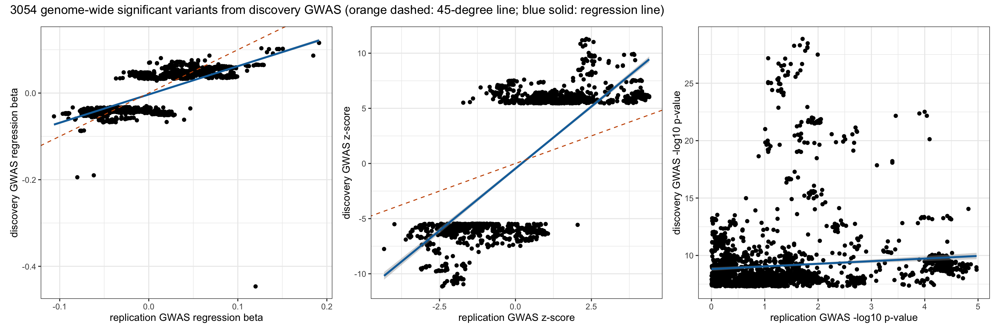
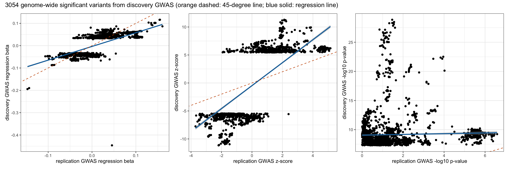
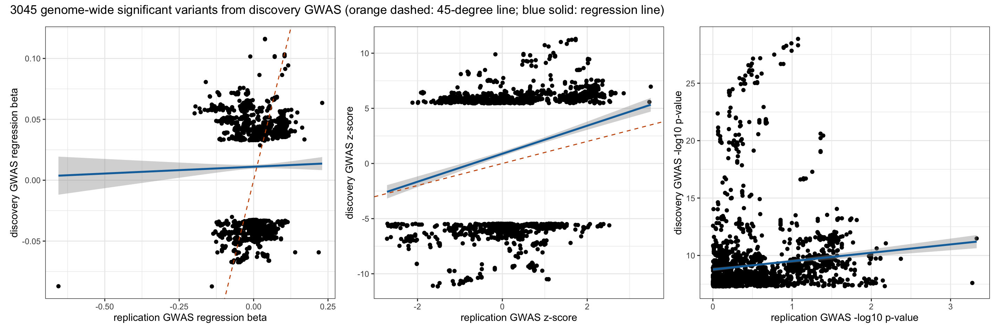

Last updated: 2025-07-31
Checks: 7 0
Knit directory: scratch/
This reproducible R Markdown analysis was created with workflowr (version 1.7.1). The Checks tab describes the reproducibility checks that were applied when the results were created. The Past versions tab lists the development history.
Great! Since the R Markdown file has been committed to the Git repository, you know the exact version of the code that produced these results.
Great job! The global environment was empty. Objects defined in the global environment can affect the analysis in your R Markdown file in unknown ways. For reproduciblity it’s best to always run the code in an empty environment.
The command set.seed(20250402) was run prior to running
the code in the R Markdown file. Setting a seed ensures that any results
that rely on randomness, e.g. subsampling or permutations, are
reproducible.
Great job! Recording the operating system, R version, and package versions is critical for reproducibility.
Nice! There were no cached chunks for this analysis, so you can be confident that you successfully produced the results during this run.
Great job! Using relative paths to the files within your workflowr project makes it easier to run your code on other machines.
Great! You are using Git for version control. Tracking code development and connecting the code version to the results is critical for reproducibility.
The results in this page were generated with repository version a6b3a50. See the Past versions tab to see a history of the changes made to the R Markdown and HTML files.
Note that you need to be careful to ensure that all relevant files for
the analysis have been committed to Git prior to generating the results
(you can use wflow_publish or
wflow_git_commit). workflowr only checks the R Markdown
file, but you know if there are other scripts or data files that it
depends on. Below is the status of the Git repository when the results
were generated:
Ignored files:
Ignored: .DS_Store
Ignored: .Rhistory
Ignored: .Rproj.user/
Note that any generated files, e.g. HTML, png, CSS, etc., are not included in this status report because it is ok for generated content to have uncommitted changes.
These are the previous versions of the repository in which changes were
made to the R Markdown
(analysis/compare_dis_with_rep_b21.Rmd) and HTML
(docs/compare_dis_with_rep_b21.html) files. If you’ve
configured a remote Git repository (see ?wflow_git_remote),
click on the hyperlinks in the table below to view the files as they
were in that past version.
| File | Version | Author | Date | Message |
|---|---|---|---|---|
| Rmd | a6b3a50 | Xiang Zhu | 2025-07-31 | compare wgs-based discovery xiangzhu/brain2gene#14 with wgs-based replication xiangzhu/brain2gene#7 |
Number of variants in the discovery GWAS: 75279024 Number of variants in the replication GWAS: 21950862 Number of genome-wide significant variants in the discovery GWAS: 3058 Number of genome-wide significant variants in the replication GWAS: 0 Number of GWAS loci in the discovery GWAS: 57 Number of GWAS loci in the replication GWAS: 0 Total number of variants shared by the discovery and replication: 21948595 Pearson correlation between dis_A1FREQ in new and rep_A1FREQ in old:
Estimate = 0.99974722 , 95% CI = [ 0.99972863 , 0.99976454 ]
Regression coefficients for dis_A1FREQ (new ~ old):
Estimate Std. Error t value Pr(>|t|)
(Intercept) 0.002027341 0.0001764838 11.48741 6.236965e-30
x 0.992520309 0.0004040298 2456.55219 0.000000e+00
Pearson correlation between dis_BETA in new and rep_BETA in old:
Estimate = 0.76837594 , 95% CI = [ 0.753441 , 0.78251841 ]
Regression coefficients for dis_BETA (new ~ old):
Estimate Std. Error t value Pr(>|t|)
(Intercept) -0.003292946 0.0005589184 -5.89164 4.24097e-09
x 0.652803004 0.0098422697 66.32647 0.00000e+00
Pearson correlation between dis_SE in new and rep_SE in old:
Estimate = 0.99861643 , 95% CI = [ 0.99851475 , 0.99871115 ]
Regression coefficients for dis_SE (new ~ old):
Estimate Std. Error t value Pr(>|t|)
(Intercept) -9.586904e-05 7.269426e-06 -13.18798 1.151675e-38
x 2.858751e-01 2.724899e-04 1049.12149 0.000000e+00
Pearson correlation between dis_CHISQ in new and rep_CHISQ in old:
Estimate = 0.10313608 , 95% CI = [ 0.06791587 , 0.13809956 ]
Regression coefficients for dis_CHISQ (new ~ old):
Estimate Std. Error t value Pr(>|t|)
(Intercept) 36.8336544 0.32737891 112.510775 0.000000e+00
x 0.2489636 0.04346211 5.728291 1.113181e-08
Pearson correlation between dis_LOG10P in new and rep_LOG10P in old:
Estimate = 0.10683142 , 95% CI = [ 0.07163419 , 0.14176291 ]
Regression coefficients for dis_LOG10P (new ~ old):
Estimate Std. Error t value Pr(>|t|)
(Intercept) 8.8179235 0.07912429 111.443950 0.000000e+00
x 0.2276689 0.03835481 5.935862 3.251836e-09
Pearson correlation between dis_ZSCORE in new and rep_ZSCORE in old:
Estimate = 0.78734138 , 95% CI = [ 0.77347268 , 0.80045654 ]
Regression coefficients for dis_ZSCORE (new ~ old):
Estimate Std. Error t value Pr(>|t|)
(Intercept) -0.458557 0.07180733 -6.385937 1.962626e-10
x 2.248618 0.03187172 70.552125 0.000000e+00Total number of genome-wide significant variants in the discovery GWAS: 3058 Number of genome-wide significant variants in the discovery GWAS that are present in the replication GWAS: 3054 Number of genome-wide significant variants in the discovery GWAS that are replicated in terms of statistical significance: 1229 Number of genome-wide significant variants in the discovery GWAS that are replicated in terms of both statistical significance and effect direction: 1228 Number of genome-wide significance loci in the discovery GWAS: 57 Number of genome-wide significance loci in the discovery GWAS that are replicated in terms of statistical significance: 57 
Number of variants in the discovery GWAS: 75279024 Number of variants in the replication GWAS: 21956220 Number of genome-wide significant variants in the discovery GWAS: 3058 Number of genome-wide significant variants in the replication GWAS: 4 Number of GWAS loci in the discovery GWAS: 57 Number of GWAS loci in the replication GWAS: 1 Total number of variants shared by the discovery and replication: 21953952 Pearson correlation between dis_A1FREQ in new and rep_A1FREQ in old:
Estimate = 0.99974293 , 95% CI = [ 0.99972402 , 0.99976054 ]
Regression coefficients for dis_A1FREQ (new ~ old):
Estimate Std. Error t value Pr(>|t|)
(Intercept) 0.002093304 0.0001779535 11.76321 2.830357e-31
x 0.992308618 0.0004073619 2435.93884 0.000000e+00
Pearson correlation between dis_BETA in new and rep_BETA in old:
Estimate = 0.77292055 , 95% CI = [ 0.75823859 , 0.78681899 ]
Regression coefficients for dis_BETA (new ~ old):
Estimate Std. Error t value Pr(>|t|)
(Intercept) -0.003468874 0.0005546431 -6.254245 4.551576e-10
x 0.614074757 0.0091248910 67.296668 0.000000e+00
Pearson correlation between dis_SE in new and rep_SE in old:
Estimate = 0.99859971 , 95% CI = [ 0.9984968 , 0.99869558 ]
Regression coefficients for dis_SE (new ~ old):
Estimate Std. Error t value Pr(>|t|)
(Intercept) -0.0001119653 7.328168e-06 -15.27875 7.694419e-51
x 0.2886193731 2.767667e-04 1042.82558 0.000000e+00
Pearson correlation between dis_CHISQ in new and rep_CHISQ in old:
Estimate = 0.03594564 , 95% CI = [ 0.00047759 , 0.07132336 ]
Regression coefficients for dis_CHISQ (new ~ old):
Estimate Std. Error t value Pr(>|t|)
(Intercept) 37.70204537 0.31407822 120.040304 0.00000000
x 0.06622578 0.03332789 1.987098 0.04700083
Pearson correlation between dis_LOG10P in new and rep_LOG10P in old:
Estimate = 0.03818806 , 95% CI = [ 0.00272309 , 0.07355709 ]
Regression coefficients for dis_LOG10P (new ~ old):
Estimate Std. Error t value Pr(>|t|)
(Intercept) 9.05445323 0.07481844 121.019003 0.00000000
x 0.06372422 0.03018337 2.111236 0.03483315
Pearson correlation between dis_ZSCORE in new and rep_ZSCORE in old:
Estimate = 0.77663516 , 95% CI = [ 0.76216115 , 0.79033314 ]
Regression coefficients for dis_ZSCORE (new ~ old):
Estimate Std. Error t value Pr(>|t|)
(Intercept) -0.477070 0.07359092 -6.482729 1.046695e-10
x 2.051364 0.03011895 68.108730 0.000000e+00Total number of genome-wide significant variants in the discovery GWAS: 3058 Number of genome-wide significant variants in the discovery GWAS that are present in the replication GWAS: 3054 Number of genome-wide significant variants in the discovery GWAS that are replicated in terms of statistical significance: 1304 Number of genome-wide significant variants in the discovery GWAS that are replicated in terms of both statistical significance and effect direction: 1303 Number of genome-wide significance loci in the discovery GWAS: 57 Number of genome-wide significance loci in the discovery GWAS that are replicated in terms of statistical significance: 57 
Number of variants in the discovery GWAS: 75279024 Number of variants in the replication GWAS: 15670694 Number of genome-wide significant variants in the discovery GWAS: 3058 Number of genome-wide significant variants in the replication GWAS: 0 Number of GWAS loci in the discovery GWAS: 57 Number of GWAS loci in the replication GWAS: 0 Total number of variants shared by the discovery and replication: 13765586 Pearson correlation between dis_A1FREQ in new and rep_A1FREQ in old:
Estimate = 0.91574059 , 95% CI = [ 0.90981404 , 0.92129374 ]
Regression coefficients for dis_A1FREQ (new ~ old):
Estimate Std. Error t value Pr(>|t|)
(Intercept) 0.04222031 0.003104750 13.59862 6.256607e-41
x 0.87999865 0.006999002 125.73202 0.000000e+00
Pearson correlation between dis_BETA in new and rep_BETA in old:
Estimate = 0.01698548 , 95% CI = [ -0.01854676 , 0.05247486 ]
Regression coefficients for dis_BETA (new ~ old):
Estimate Std. Error t value Pr(>|t|)
(Intercept) 0.01106361 0.0007959076 13.9006184 1.229133e-42
x 0.01116910 0.0119186437 0.9371117 3.487755e-01
Pearson correlation between dis_SE in new and rep_SE in old:
Estimate = 0.78223441 , 95% CI = [ 0.76805435 , 0.79564776 ]
Regression coefficients for dis_SE (new ~ old):
Estimate Std. Error t value Pr(>|t|)
(Intercept) 0.004892747 3.729676e-05 131.18423 0
x 0.037698056 5.442621e-04 69.26452 0
Pearson correlation between dis_CHISQ in new and rep_CHISQ in old:
Estimate = 0.11193258 , 95% CI = [ 0.07671656 , 0.14686968 ]
Regression coefficients for dis_CHISQ (new ~ old):
Estimate Std. Error t value Pr(>|t|)
(Intercept) 36.8934100 0.3119070 118.283370 0.000000e+00
x 0.8938424 0.1438519 6.213629 5.882578e-10
Pearson correlation between dis_LOG10P in new and rep_LOG10P in old:
Estimate = 0.12762068 , 95% CI = [ 0.09251905 , 0.16240551 ]
Regression coefficients for dis_LOG10P (new ~ old):
Estimate Std. Error t value Pr(>|t|)
(Intercept) 8.7770556 0.0767372 114.37811 0.000000e+00
x 0.7285582 0.1026423 7.09803 1.568083e-12
Pearson correlation between dis_ZSCORE in new and rep_ZSCORE in old:
Estimate = 0.23543753 , 95% CI = [ 0.20160249 , 0.26871135 ]
Regression coefficients for dis_ZSCORE (new ~ old):
Estimate Std. Error t value Pr(>|t|)
(Intercept) 0.8828318 0.11109468 7.946661 2.674141e-15
x 1.2704755 0.09507285 13.363179 1.271025e-39Total number of genome-wide significant variants in the discovery GWAS: 3058 Number of genome-wide significant variants in the discovery GWAS that are present in the replication GWAS: 3045 Number of genome-wide significant variants in the discovery GWAS that are replicated in terms of statistical significance: 444 Number of genome-wide significant variants in the discovery GWAS that are replicated in terms of both statistical significance and effect direction: 429 Number of genome-wide significance loci in the discovery GWAS: 57 Number of genome-wide significance loci in the discovery GWAS that are replicated in terms of statistical significance: 57 
R version 4.5.1 (2025-06-13)
Platform: aarch64-apple-darwin20
Running under: macOS Sequoia 15.5
Matrix products: default
BLAS: /Library/Frameworks/R.framework/Versions/4.5-arm64/Resources/lib/libRblas.0.dylib
LAPACK: /Library/Frameworks/R.framework/Versions/4.5-arm64/Resources/lib/libRlapack.dylib; LAPACK version 3.12.1
locale:
[1] en_US.UTF-8/en_US.UTF-8/en_US.UTF-8/C/en_US.UTF-8/en_US.UTF-8
time zone: America/Los_Angeles
tzcode source: internal
attached base packages:
[1] stats graphics grDevices utils datasets methods base
other attached packages:
[1] xzTools_0.0.0.9000 patchwork_1.3.1 ggplot2_3.5.2 dplyr_1.1.4
[5] data.table_1.17.8 workflowr_1.7.1
loaded via a namespace (and not attached):
[1] sass_0.4.10 generics_0.1.4 lattice_0.22-7 stringi_1.8.7
[5] digest_0.6.37 magrittr_2.0.3 evaluate_1.0.4 grid_4.5.1
[9] RColorBrewer_1.1-3 fastmap_1.2.0 Matrix_1.7-3 R.oo_1.27.1
[13] rprojroot_2.0.4 jsonlite_2.0.0 processx_3.8.6 R.utils_2.13.0
[17] whisker_0.4.1 ps_1.9.1 promises_1.3.3 mgcv_1.9-3
[21] httr_1.4.7 purrr_1.1.0 scales_1.4.0 jquerylib_0.1.4
[25] cli_3.6.5 rlang_1.1.6 R.methodsS3_1.8.2 splines_4.5.1
[29] withr_3.0.2 cachem_1.1.0 yaml_2.3.10 tools_4.5.1
[33] httpuv_1.6.16 vctrs_0.6.5 R6_2.6.1 lifecycle_1.0.4
[37] git2r_0.36.2 stringr_1.5.1 fs_1.6.6 pkgconfig_2.0.3
[41] callr_3.7.6 pillar_1.11.0 bslib_0.9.0 later_1.4.2
[45] gtable_0.3.6 glue_1.8.0 Rcpp_1.1.0 xfun_0.52
[49] tibble_3.3.0 tidyselect_1.2.1 rstudioapi_0.17.1 knitr_1.50
[53] farver_2.1.2 nlme_3.1-168 htmltools_0.5.8.1 labeling_0.4.3
[57] rmarkdown_2.29 compiler_4.5.1 getPass_0.2-4